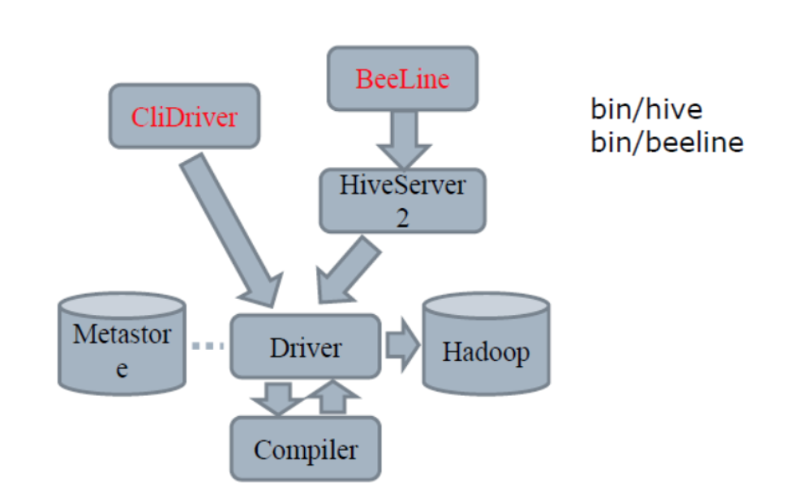
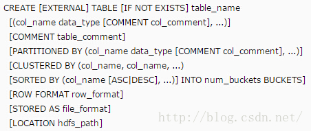

架构在Hadoop之上，提供简单的sql查询功能，可以将sql语句转换为MapReduce任务进行运行(增删改查)。
所有的增删改查操作都是应用在hdfs上的。Hive 中所有的数据都存储在 HDFS 中，Hive 中包含以下数据模型：Table，External Table，Partition，Bucket。
hive是一个数据仓库工具，作用是可以将结构化的数据文件映射为一张数据库表，并提供简单查询功能，可以将sql语句转化为Mapreduce任务进行，是在Hadoop上的数据库基础架构。
Hive 不是一个关系数据库/实时查询和行级更新的语言.
Hadoop是一个开源框架来存储和处理大型数据在分布式环境中。它包含两个模块，一个是MapReduce，另外一个是Hadoop分布式文件系统（HDFS）:
- MapReduce：它是一种并行编程模型在大型集群普通硬件可用于处理大型结构化，半结构化和非结构化数据。
- HDFS：Hadoop分布式文件系统是Hadoop的框架的一部分，用于存储和处理数据集。它提供了一个容错文件系统在普通硬件上运行。
hive的安装需要安装MySQL,因为hive 默认的数据库是Derby数据库，其与MySQL数据库比较存在缺陷，比如不可以执行两个并发的Hive CLI。
Hive 将元数据存储在数据库中，如 mysql、derby。Hive 中的元数据包括表的名字，表的列和分区及其属性，表的属性（是否为外部表等），表的数据所在目录等。
Hive只是一个客户端，在安装时，我们可以在Hadoop集群中，选择一台安装Hive。Hive没有集群的概念，但是可以搭建Server/Client端。
MapReduce任务(job)的启动需要消耗较长时间，所以Hive的查询延时比较严重。在传统数据库中秒级的任务，在Hive仍需要更长时间。Hive适用不需要实时响应查询的数据仓库程序，不需要记录级别的增删改
Hive不支持事务。提交查询和返回结果可能有很大的延时，此时选用NoSQL数据库，Hbase等。
Hive框架的作用
（1）可以让不懂java的数据分析人员使用hadoop进行数据分析；
（2）MapReduce开发非常繁琐复杂，使用hive可以提高效率。
（3）统一的元数据管理，可与impala/spark共享元数据。
hive模型图
driver：hive查询的sql都会先提交到driver这里。而driver又由compiler、optimizer、Executor组成。compiler将类sql查询语句进行解析、并且从元数据库取元数据解析优化，成mr job，提交到hadoop集群执行。driver里面有个优化器optimizer。
它的作用是：
- 1、去掉不必要的列和分区，优化查询。
- 2、将多 multiple join 合并为一个 multi-way join；
- 3、对join、group-by 和自定义的 map-reduce 操作重新进行划分；

hive在hdfs上的文件结构
1 | 数据仓库的位置 数据库目录 表目录 表的数据文件 |
Hive的数据都是存储在HDFS上的，默认有一个根目录，在hive-site.xml中，由参数hive.metastore.warehouse.dir指定。
default是默认的数据库：指的就是这个/user/hive/warehouse路径，因此表就直接在这个目录下
参考：https://www.cnblogs.com/xningge/p/8439970.html
queuename
hadoop相关,作业提交到的队列，默认是default。通过set mapreduce.job.queuename可以查看当前定义队列名。
队列是跟用户对应的，哪个用户要执行，需要指定哪个队列。mapred.job.queue.name 一样，这个是老版本v1的，上面是新版本v2的。
拥有不同优先级的各种队列只是让Hadoop可以轻松决定处理器可用时下一步该做什么，或者它可以使用多少。
更多参考：http://dongxicheng.org/mapreduce-nextgen/hadoop-yarn-configurations-mapreduce/
元数据
Hive中表和分区的所有元数据都存储在Hive的元存储（Metastore）中。
元数据使用JPOX（Java Persistent Objects）对象关系映射解决方案进行持久化，所以任何被JPOX支持的存储都可以被Hive使用。
大多数商业关系型数据库和许多开源的数据存储都被支持，所以就可以被Hive使用存储元数据。Hive支持三种不同的元存储服务器，分别为：内嵌式元存储、本地元存储、远程元存储，每种存储方式使用不同的配置参数，
内嵌式元存储：主要用于单元测试，在该模式下每次只有一个进程可以连接到元存储，Derby是内嵌式元存储的默认数据库。
本地模式：每个Hive客户端都会打开到数据存储的连接并在该连接上请求SQL查询。
远程模式：所有的Hive客户端都将打开一个到元数据服务器的连接，该服务器依次查询元数据。
参考：https://blog.csdn.net/skywalker_only/article/details/26219619（三种元数据存储方式）
http://www.cloudera.com/documentation/cdh/5-1-x/CDH5-Installation-Guide/cdh5ig_hive_metastore_configure.html
引擎
hive执行引擎 mr/tez/spark
分区
hive引入partition和bucket的概念，中文翻译分别为分区和桶，这两个概念都是把数据划分成块，分区是粗粒度的划分，桶是细粒度的划分，这样做为了可以让查询发生在小范围的数据上以提高效率。
在Hive Select查询中一般会扫描整个表内容，会消耗很多时间做没必要的工作。有时候只需要扫描表中关心的一部分数据，因此建表时引入了partition概念。
分区表指的是在创建表时指定的partition的分区空间。如果需要创建有分区的表，需要在create表的时候调用可选参数partitioned by。
一个表可以拥有一个或者多个分区，每个分区以文件夹的形式单独存在表文件夹的目录下。
分区是以字段的形式在表结构中存在，通过describe table命令可以查看到字段存在，但是该字段不存放实际的数据内容，仅仅是分区的表示。
创建单分区/多分区
关于分区维度的选择，我们应该尽量选取那些有限且少量的数值集作为分区，例如国家、省份就是一个良好的分区，而城市就可能不适合进行分区。
分区建表分为2种，一种是单分区，也就是说在表文件夹目录下只有一级文件夹目录。另外一种是多分区，表文件夹下出现多文件夹嵌套模式。
a、单分区建表语句：create table day_table (id int, content string) partitioned by (dt string);单分区表，按天分区，在表结构中存在id，content，dt三列。
b、双分区建表语句：create table day_hour_table (id int, content string) partitioned by (dt string, hour string);双分区表，按天和小时分区，在表结构中新增加了dt和hour两列。多个分区意味着多级目录。
分区是数据表中的一个列名，但是这个列并不占有表的实际存储空间。它作为一个虚拟列而存在。
查看/增加/删除分区
show partitions table_name [partition(...)] 查看表所有的分区；加上可选[partition(...)]可以查看指定分区是否存在。alter table xxx add [if not exist] partition (dt='2018-05-22') 对分区名是dt的表增加分区alter table table_name drop partition (dt='2018-05-22') 删除分区alter table table_name partition(dt='...') set localtion '...' 修改分区地址（不会修改/删除旧的分区数据）alter table table_name drop [if exist] partition (dt='...') 删除分区。如果是内部表，还会删除数据。
当外部表是分区表时，只有建立对应的分区，才能查到数据. 删除内部表的分区会删除相应的数据。
Buckets 桶
假设我们有一张地域姓名表并按城市分区。那么很有可能，北京分区的人数会远远大于其他分区，该分区的数据I/O吞吐效率将成为查询的瓶颈。如果我们对表中的姓名做分桶，将姓名按哈希值分发到桶中，每个桶将分配到大致均匀的人数。
分桶解决的是数据倾斜的问题。
Hive采用对列值哈希，然后除以桶的个数求余的方式决定该条记录存放在哪个桶当中。
对指定列计算 hash，根据 hash 值切分数据，目的是为了并行，每一个 Bucket 对应一个文件。将 user 列分散至 32 个 bucket，首先对 user 列的值计算 hash，对应 hash 值为 0 的 HDFS 目录为：/warehouse/app/dt=20100801/ctry=US/part-00000；hash 值为 20 的 HDFS 目录为：/warehouse/app/dt=20100801/ctry=US/part-00020
创建桶表
create table table_name() clustered by(col_0) into bucket_num buckets;
创建表，按照col_0分桶，有bucket_num个桶。set hive.enforce.bucketing = true; 强制桶的个数和表定义相同，否则实际桶的个数和reducer一样。
插入数据
由文件导入数据时，需要一种中间表，详细看下面‘文件导入数据’小节。
数据查询
select * from table_name tablesample(bucket x out of y on col_0);
x:从第x桶开始抽取数据。
y:是总桶数的因数或倍数。 从x开始，分隔y个桶取数。
col_0:分桶的列。
eg：共有4个桶，y=2，x=2，会取第2、4个桶的数据；按照col_0分桶，会取col_0列的哈希值除以4余数是1、3的列。
总结自：https://www.cnblogs.com/MrFee/p/hive_bucket.html
https://blog.csdn.net/m0_37534613/article/details/55258928
建表

- PARTITIONED 表示的是分区，不同的分区会以文件夹的形式存在，在查询的时候指定分区查询将会大大加快查询的时间。
- CLUSTERED表示的是按照某列聚类，例如在插入数据中有两项“张三，数学”和“张三，英语”，若是CLUSTERED BY name，则只会有一项，“张三，(数学，英语)”，这个机制也是为了加快查询的操作。
- STORED是指定排序的形式，是降序还是升序。
- BUCKETS是指定了分桶的信息，这在后面会单独列出来，在这里还不会涉及到。
- ROW FORMAT是指定了行格式字段，如行、列的分隔符，
ROW FORMAT DELIMITED FIELDS TERMINATED BY '\t' LINES TERMINATED BY '\n' - STORED AS是指定文件的存储格式。Hive中基本提供两种文件格式：SEQUENCEFILE和TEXTFILE，序列文件是一种压缩的格式，通常可以提供更高的性能，默认是TEXTFILE。
- LOCATION指的是在HDFS上存储的位置。
create [external] table table_name1 like table_name2 [location hdfs_path] 创建一个和表2结构一样的表
(内部)表
表其实就是hdfs目录
Hive中的表和关系型数据库中的表在概念上很类似，每个表在HDFS中都有相应的目录用来存储表的数据，这个目录可以通过${HIVE_HOME}/conf/hive-site.xml配置文件中的hive.metastore.warehouse.dir属性来配置，这个属性默认的值是/user/hive/warehouse（这个目录在HDFS上），我们可以根据实际的情况来修改这个配置。
如果我有一个表wyp在cl库中，那么在HDFS中会创建/user/hive/warehouse/cl.db/wyp目录（这里假定hive.metastore.warehouse.dir配置为/user/hive/warehouse）；wyp表所有的数据都存放在这个目录中。这个例外是外部表。
参考：https://www.jianshu.com/p/dd97e0b2d2cf
外部表
数据源不在我们这里，由别人提供，或者其他工具提供。
指向已经在 HDFS 中存在的数据，可以创建 Partition。它和 Table 在元数据的组织上是相同的，而实际数据的存储则有较大的差异。
(内部表)/外部表 区别
外部表在建表时多了‘EXTERNAL’： CREATE EXTERNAL TABLE
（1）、在导入数据到外部表，数据并没有移动到自己的数据仓库目录下，也就是说外部表中的数据并不是由它自己来管理的！而表则不一样；
（2）、在删除表的时候，Hive将会把属于表的元数据和数据全部删掉；而删除外部表的时候，Hive仅仅删除外部表的元数据，数据是不会删除的！
（3）、表有创建过程和数据加载过程（这两个过程可以在同一个语句中完成），在加载数据的过程中，实际数据会被移动到数据仓库目录中；之后对数据对访问将会直接在数据仓库目录中完成。删除表时，表中的数据和元数据将会被同时删除。
外部表只有一个过程，加载数据和创建表同时完成（CREATE EXTERNAL TABLE ……LOCATION），实际数据是存储在 LOCATION 后面指定的 HDFS 路径中，并不会移动到数据仓库目录中。
外部表适用场景：源表，需要定期将外部数据映射到表中。
使用场景例子：
每天将收集到的网站日志定期流入HDFS文本文件，一天一个目录；
在Hive中建立外部表作为源表，通过添加分区的方式，将每天HDFS上的原始日志映射到外部表的天分区中；
在外部表（原始日志表）的基础上做大量的统计分析，用到的中间表、结果表使用内部表存储，数据通过SELECT+INSERT进入内部表。
关于Strict Mode
Hive中的严格模式可以防止用户发出（可以有问题）的查询无意中造成不良的影响。 将hive.mapred.mode设置成strict可以禁止三种类型的查询：
1）、在一个分区表上，如果没有在WHERE条件中指明具体的分区，那么这是不允许的，换句话说，不允许在分区表上全表扫描。这种限制的原因是分区表通常会持非常大的数据集并且可能数据增长迅速，对这样的一个大表做全表扫描会消耗大量资源，必须要再WHERE过滤条件中具体指明分区才可以执行成功的查询。
2）、第二种是禁止执行有ORDER BY的排序要求但没有LIMIT语句的HiveQL查询。因为ORDER BY全局查询会导致有一个单一的reducer对所有的查询结果排序，如果对大数据集做排序，这将导致不可预期的执行时间，必须要加上limit条件才可以执行成功的查询。
3）、第三种是禁止产生笛卡尔集(full Cartesian product)。在JION接连查询中没有ON连接key而通过WHERE条件语句会产生笛卡尔集，需要改为JOIN…ON语句。
修改表
所有通过alter，修改的只是表的元数据，表里存的数据并不会改变。
改变location
通过修改表DDL：alter table t_m_cc set location 'hdfs://heracles/user/video-mvc/hive/warehouse/t_m_cc'
直接修改hive 的meta info: update DBS set DB_LOCATION_URI = replace(DB_LOCATION_URI,"oldpath","newpath")
update SDS set location =replace(location,'oldpath,'newpath')
修改表名
alter table old_name rename to new_name 改表名
修改列
1 | alter table table_name change column old_field_name new_field_name field_type |
修改列名、注释的位置；如果要挪到第一个位置，只需要用first代替after field_name。
注意前面提到的alter语句只修改表元数据，数据没有任何变化，所以列的位置变化时，数据不会跟着变化。
但其实不推荐增加列，因为会有很多的问题。
增加新的列后，可能发现新增加的列插入的数据都是null。不管是用insert into还是insert overwrite。
解决办法（1）：删除对应的分区alter table table_name drop partition(dt=...)，然后可以准确插入数据。
解决办法（2）：修改元数据，但一般没有权限，参考，没有验证过。
alter table table_name add columns(..., ...)添加新的（多个）字段。alter table table replace columns (..., ..., ...);删除/替换列
修改表属性
alter table table_name set tblproperties(...) 可以增加新的表属性，或者修改已经存在的属性，但是无法删除属性
MSCK修复分区
MSCK REPAIR TABLE table_name;
Hive会检测如果HDFS目录下存在但表的metastore中不存在的partition元信息，更新到metastore中。
代替手动通过alter table add partition方式增加Hive分区的方式。
查看命令
describe [extended/formatted] table_name 查看表信息，类似desc 可选的[extended]可以看到更详细的信息，formatted看更多信息，可读性强describe database [extended/formatted] database1 查看库信息，可以看到库地址drop database database1 cascade/restrict 库不为空时，一般不允许直接删除，cascade保证可以删除，默认是restrictshow tables in data_base 在别的库里查询库data_base所有的表
读时模式
hive是“读时模式”，对于存储文件的完整性、数据的格式是否和表匹配性等方面都没有支配能力。
只有在读数据时才会尽量的把hdfs的文件和表字段进行匹配。
我遇到的一个典型例子：hdfs文件里数据是3.5，hive表对应字段类型是decimal，这样导致读出来的数是4.（decimal没有指定小数精度时，默认是没有小数位）
自定义表的存储格式
inputformat对象将输入流分割成记录；outputformat对象将记录格式化为输出流（如查询的输出结果）；一个SerDe在读数据时将记录解析列，在写数据时将列编码成记录。
SerDe决定了记录是如何分解成字段的（反序列化过程），以及字段是如何写入到存储中的（序列化过程）。
SerDe Library、InputFormat、outputFormat
由一个错误引出：Failed with exception java.io.IOException:java.lang.ClassCastException: org.apache.hadoop.hive.ql.io.orc.OrcStruct cannot be cast to org.apache.hadoop.io.BinaryComparable
问题复现：
建一个外部表，建表语句如下，一般inputformat、outputformat写成下面这样的，都是通过show create table table_name得到建表语句：
1 | CREATE EXTERNAL TABLE test_orc( |
之后使用 select查询该表时报上面的错。
原因分析：
orc格式的表通过show create table得到的建表语句直接建外部表，查数据时会报强转失败的错。
因为这个建表语句显式指定了STORED AS INPUTFORMAT/OUTPUTFORMAT，但是没有定义serde，serde使用了默认值 。
通过describe formatted test_orc看到SerDe Library的类型和inputformat/outputformat没有对应。
Your SerDe library is LazySimpleSerde and your Input Format and Output Format are ORC. Totally not gonna work!：
1 | | # Storage Information | |
解决办法：
1 | CREATE EXTERNAL TABLE test_orc( |
之后describe formatted test_orc：
1 | # Storage Information |
三者关系详解：
Hive中，默认使用的是TextInputFormat，一行表示一条记录。在每条记录(一行中)，默认使用^A分割各个字段。
在有些时候，我们往往面对多行，结构化的文档，并需要将其导入Hive处理。
有很多可选的办法来存储数据。如把数据放在一个地方，hive通过external包裹它；
如直接放在hive warehouse用表table来管理。可以指定inputformat和outputformat指定表的存储。
我们在客户端使用sql操作表，但是底层数据可能是 text file or sequence file or hbase table or some other data structure.
Hive官方说法：
SerDe is a short name for “Serializer and Deserializer.”
Hive uses SerDe (and !FileFormat) to read and write table rows.
HDFS files –> InputFileFormat –> <key, value> –> Deserializer –> Row object
Row object –> Serializer –> <key, value> –> OutputFileFormat –> HDFS files
总结一下，当面临一个HDFS上的文件时，Hive将如下处理（以读为例）：
(1) 调用InputFormat，将文件切成不同的文档。每篇文档即一行(Row)。
(2) 调用SerDe的Deserializer，将一行(Row)，切分为各个字段。
(3)SerDe：序列化、反序列化。hive读写表数据(不是文件)。可以理解成一行row和多个字段field转变的过程。
(4)InputFormat、outputFormat：hdfs文件到表数据的转化。将文件切成不同的文档row；把row组合成底层的文件。
其他：serdeproperties可以传递参数给serde。
这三个参数都可以重写，详细看下面第一个链接。
参考：https://www.coder4.com/archives/4031
https://stackoverflow.com/questions/42416236/what-is-the-difference-between-inputformat-outputformat-stored-as-in-hive
hive的默认数据分隔符^A
hive的默认数据分隔符是\001,也就是^A ，属于不可见字符。
最简单的方法就是用sed（注意这个^A是按CTRL+V+A打出来的，或者按下crtl+v然后再按下crtl+a就会出来/tmp/out目录(\001)，直接输入的^A是不行的。）
也不能通过复制粘贴的方式。前一个地方用的CTRL+V+A，复制粘贴后就失效，要重新CTRL+V+A。
例：sed -i ‘s/^A/|/g’ 000000_0
来自网络：
在python中可以使用line.split(‘\x01’)来进行切分，也可以使用line.split(‘\001’)，注意其中是单引号
在java中可以使用split(“\u0001”)来进行切分
hive默认记录、字段分割符
| 分隔符 | 描述 |
|---|---|
| \n | 换行符。默认记录分隔符，一行一个记录。 |
| ^A | 用于分割字段。可用八进制\001表示(看上节) |
| ^B | 用与分割array、struct、map的key-value对。可用八进制\002表示 |
| ^C | 用于分割map的key、value对。可用八进制\003表示 |
ROW FORMAT DELIMITED必须写在其他字段前，除了stored as。
集合数据类型
array、map、struct三种。好处是处理p/t级数据时，减少寻址，快。坏处是增大数据冗余等。
时间类型
Timestamps类型可以是
- （1）以秒为单位的整数；
- （2）带精度的浮点数，最大精确到小数点后9位，纳秒级；
- （3）java.sql.Timestamp格式的字符串 YYYY-MM-DD hh:mm:ss.fffffffff
Date 只支持YYYY-MM-DD格式的日期，其余写法都是错误的，如需带上时分秒，需使用timestamp。
计算时间的月份差
select floor(months_between('2018-07-01','2018-02-04')) from default.dual
返回值为: 4
时间格式必须是yyyy-mm-dd，如果是yyyymmdd需要转换floor是取整函数
yyyy-mm-dd、yyyymmdd互转
方法1: from_unixtime+ unix_timestamp
1 | --20171205转成2017-12-05 |
方法2: substr + concat
1 | --20171205转成2017-12-05 |
执行外部命令
hadoop命令：
把命令行里的hadoop去掉。
如直接执行dfs -ls ...;此种方法相叫hadoop的命令更为高效，hadoop是新开一个jvm线程执行，前者在当前线程执行。
其他命令，以!开始，以;结束，不能用管道、文件补全、用户交互等操作。
如!echo 'li';
if
If 函数语法: if(boolean testCondition, T valueTrue, T valueFalseOrNull)
返回值: T
说明: 当条件testCondition为TRUE时，返回valueTrue；否则返回valueFalseOrNull
举例：
1 | hive> select if(1=2,100,200) from dual; |
【is null】 = 【 = null】？、【is not null】 = 【 <> null】？
hive 里（包括IF函数与Where条件里）判断是否为NULL要用 is null或 is not null ，不能使用 <> null 或 = null（虽然不报错）
null在hive底层默认是用’\N’来存储的，可以通过alter table test SET SERDEPROPERTIES(‘serialization.null.format’ = ‘a’);来修改。
<> != 区别
语法: A <> B
操作类型: 所有基本类型
描述: 如果表达式A为NULL，或者表达式B为NULL，返回NULL，因此比较时要特别注意字段为null的情况（如果有一边等于null，结果就是false）；
如果表达式A与表达式B不相等，则为TRUE；否则为FALSE
hive中，当两边数据类型不对等时，比较的时候会出现问题。
insert
1.insert into是增加数据
2.insert overwrite是删除原有数据然后在新增数据，如果有分区那么只会删除指定分区数据，其他分区数据不受影响
rand
语法: rand(),rand(int seed)
返回值: double
说明:返回一个0到1范围内的随机数。如果指定种子seed，则会等到一个稳定的随机数序列
cast
作用：转换
格式 cast(col as type)
binary(string|binary)
将输入的值转换成二进制
base64(binary bin)
将二进制bin转换成64位的字符串
find_in_set查找函数
集合查找函数: find_in_set
语法: find_in_set(string str, string strList)
返回值: int
说明: 返回str在strlist第一次出现的位置，strlist是用逗号分割的字符串。如果没有找该str字符，则返回0
例子：select find_in_set('de','ef,ab,de'); 返回3
decimal
DECIMAL Hive 0.11.0引入，Hive 0.13.0开始，用户可以使用DECIMAL(precision, scale) 语法在创建表时来定义Decimal数据类型的precision和scale。
如果未指定precision，则默认为10。如果未指定scale，它将默认为0（无小数位）。
曾遇到这样的问题，创建的外部表没有指定精度，外部表指定的内部表有指定精度，从外部表查数据时仍然截断了小数部分。
export LC_ALL=en_US.UTF-8
export LC_ALL=en_US.UTF-8 解决hive客户端调用脚本中文问题
https://perlgeek.de/en/article/set-up-a-clean-utf8-environment
SIZE
数组长度。
注意的是，如果和split一起用size(split(str, 'operate'))，如果str为‘’或者null时，返回的结果是1；因为split返回的是有一个空串的数组。
get_json_object
get_json_object(json_string,’$.str’) 得到json字符串json_string的$.str节点的值，$指根节点。
REGEXP/RLIKE/LIKE
语法: A REGEXP B
操作类型: strings
描述: 功能与RLIKE相同
LIKE:不是正则，而是通配符。这个通配符可以看一下SQL的标准，例如%代表任意多个字符。
RLIKE:是正则，正则的写法与java一样。功能与REGEXP相同.
REGEXP_EXTRACT
regexp_extract(string subject, string pattern, int index)
通过下标返回正则表达式指定的部分。正则\需要转义\\,例如’\w’需要使用’\w’
index指的是：返回所有匹配的第N个.
参考：http://www.cnblogs.com/judylucky/p/3713774.html
NVL
NVL( str, replace_with)
str为NULL, 则NVL函数返replace_with值，否则返str值
CONCAT(str1, str2,…)
连接字符串，如果参数中有null，返回结果也会是null，因此可以结合上面的方面使用。
CONCAT_WS(separator, str1, str2,…)
它是一个特殊形式的 CONCAT()。第一个参数是剩余参数间的分隔符。分隔符可以是与剩余参数一样的字符串。如果分隔符是 NULL，返回值也将为 NULL。这个函数会跳过分隔符参数后的任何 NULL 和空字符串。分隔符将被加到被连接的字符串之间
这个函数会跳过分隔符参数后的任何 NULL 和空字符串，但是跳过空字符串后还是会有多余的分隔符存在（非常鸡肋啊）。
COLLECT_SET() 列转行
是 Hive 内置的一个聚合函数, 它返回一个消除了重复元素的对象集合, 其返回值类型是 array 。
把group by值一样的分组由列变成行，即变成数组，可以用下标访问。
collect_set()方法把group by一样的组里的数据组成一个数组。数组从0开始，如果直接select数组，是[item1, …, itemn]的格式。
如select collect_set(uname) unames ....group by uid，把同一个uid的uname组成数组， 通过别名unames[ind]访问数据。concat_ws(',',collect_set(cast(col_0 as string))) 两个一起使用把列变成由逗号分割的行。
COLLECT_LIST() 行转列去重
collect_list(id) 列出该字段所有的值，列出来不去重
EXPLODE 行转列
上面的collect_set是把列变成行，explode是把行变成列。explode(array) 把数组里的数据变成列形式。经常与split一起用。
例如，在wordcount中有explode(split(line, ' ')) 或explode(split(line, '\\s'))
LATERAL VIEW 一行变多行
lateral view用于和split、explode等UDTF一起使用的，能将一行数据拆分成多行数据，在此基础上可以对拆分的数据进行聚合。
1 | SELECT myCol1, myCol2, col3 FROM baseTable |
示例：
执行过程是先执行from到 as cloumn的列过程，再执行select 和where后边的语句；
sql如下：
1 | select datenu,des,type from tb_split |
数据如下：
1 | 20141018 aa|bb 7|9 |
希望的结果是：
1 | 20141018 aa 7 |
json数组行转列
方法1：
1 | select get_json_object(col, '$.bssid') |
结果：
1 | 6C:59:40:21:05:C4 |
方法2：
1 | select get_json_object('[{"bssid":"6C:59:40:21:05:C4","ssid":"MERCURY_05C4"},{"bssid":"AC:9C:E4:04:EE:52","appid":"10003","ssid":"and-Business"}]', '$[@.bssid]') as str |
结果与方法1一样。
差别：第一种可以得到所有的数组，第二中只能得到数组里某个值。
LEAD LAG FIRST_VALUE LAST_VALUE窗口函数
| 窗口函数 | 描述 |
|---|---|
| LAG() | LAG()窗口函数返回分区中当前行之前行（可以指定第几行）的值。 如果没有行，则返回null。 |
| LEAD() | LEAD()窗口函数返回分区中当前行后面行（可以指定第几行）的值。 如果没有行，则返回null。 |
| FIRST_VALUE | FIRST_VALUE窗口函数返回相对于窗口中第一行的指定列的值。 |
| LAST_VALUE | LAST_VALUE窗口函数返回相对于窗口中最后一行的指定列的值。 |
语法：
1 | LAG | LEAD |
1 | FIRST_VALUE | LAST_VALUE |
参考：https://blog.csdn.net/sunnyyoona/article/details/56484919
row_num()/rank/dense_rank over (…)。
从1开始，为每个分组的每条记录返回一个数字。
1例如，ROW_NUMBER() OVER (ORDER BY xlh DESC) 是先按照xlh列降序，再为降序以后的每条记录返回一个序号。
2例
数据库中有数据
1 | empid deptid salary |
需求根据部门分组，显示每个部门的工资等级
sql：SELECT *, Row_Number() OVER (partition by deptid ORDER BY salary desc) rank FROM employee
结果：
1 | empid deptid salary rank |
例子参考：https://blog.csdn.net/biaorger/article/details/38523527
row_number()另一作用可以用来去除重复：先按分组字段分区，再通过 rownum = 1过滤即可。另外，去重还可以借助于group by。
1 | select a,row_number() over(order by b) row_number,rank() over(order by b) rank, |
partition by与group by 的区别
后者是经典的使用，是对检索结果的保留行进行单纯分组，如果有sum函数，就是先分组再对每个分组求和；
前者类似虽然也具有分组功能，但同时也具有其他的功能，如果有sum函数，是先分组，再累加，会把分组里累加的过程输出。
1 | 表： |
从上面的例子中可以看到第二条语句的累加过程
hive中group by和mysql不同。mysql可以接受select处理后的别名作为group by，hive的group by不能接受。
ORDER /SORT /DISTRIBUTE BY
ORDER BY全局排序，会将所有数据送到同一个Reducer中后再对所有数据进行排序，对于大数据会很慢，谨慎使用SORT BY局部排序，只会在每一个Reducer中对数据进行排序，在每个Reducer输出是有序的，但并非全局排序（每个reducer出来的数据是有序的，但是不能保证所有的数据是有序的——即文件(分区)之间无序，除非只有一个reducer）DISTRIBUTE BY控制map的输出被送到哪个reducer端进行汇总计算，相同字段的map输出会发到一个reduce节点去处理。通过这个特性可以强行使hql有reduce，伴随有减少mapper输出文件个数、减轻数据倾斜等功效，可看下面链接里的例子。用distribute by 会对指定的字段按照hashCode值对reduce的个数取模，然后将任务分配到对应的reduce中去执行
关与DISTRIBUTE BY使用非常好的文章：https://www.iteblog.com/archives/1533.html
注：HIVE reducer分区个数由mapreduce.job.reduces来决定，该选项只决定使用哪些字段做为分区依据，如果没通过DISTRIBUTE BY指定分区字段，则默认将整个文本行做为分区依据。分区算法默认是HASH，也可以自己实现。这里DISTRIBUTE BY讲的分区概念是指Hadoop里的，而非我们HIVE数据文本存储分区。Hadoop里的Partition主要作用就是将map的结果发送到相应的reduce，默认使用HASH算法，不过可以重写.
group by 1, 2, 3
SET hive.groupby.orderby.position.alias=true 默认是false。（mysql可直接使用。）
打开这个开关后，group by可以通过1， 2， 3这样的数字指定 使用select的第几个字段。
示例：SELECT substr(date, 1, 4), count(1) year FROM *** GROUP BY 1;
having by
GROUP BY子句之后使用Having子句
可应用限定条件进行分组，以便系统仅对满足条件的组返回结果。
在GROUP BY子句后面包含了一个HAVING子句。HAVING类似于WHERE（唯一的差别是WHERE过滤行，HAVING过滤组）AVING支持所有WHERE操作符。
导出数据到本地
hive的-e和-f参数可以用来导出数据。
-e 表示后面直接接带双引号的sql语句；而-f是接一个文件，文件的内容为sql语句。
（1）hive -e "use test; select * from student where sex = '男'" > /tmp/output.txt
（2）insert overwrite local directory "/tmp/out" select cno,avg(grade) from sc group by(cno);
（3）insert overwrite local directory "/tmp/out" row format delimited fields terminated by ' ' select cno,avg(grade) from sc group by(cno);
（2）也可以作为（1）中-e的参数执行。
（2）这条HQL的执行需要启用Mapreduce完成，运行完这条语句之后，将会在本地文件系统的/tmp/out目录下生成文件，这个文件是Reduce产生的结果（这里生成的文件名是000000_0），数据的分割使用的就是上面提到的^A
（3）通过加入row format delimited fields terminated by ' '使的数据的分割是空格，而不是^A.
（1）中会直接保存成本地文件，把数据直接保存在/tmp/output.txt中，数据默认由空格分割。
（2）这条HQL的‘local’去掉，数据会被保存在hdfs系统的/tmp/out目录下。
（2）不能使用insert into或者insert local
into/overwrite 导出数据到表
把表2的数据导出到表1：
(1)insert into table_name1(...) select ... from table_name2
(2)insert overwrite table_name1(...) select ... from table_name2
select 部分不能用括号，否则会被认为是表1的字段；
(…)中是表1的字段，可以省略； select ... 可以用select * 代替；
(1)是直接导入，(2)是覆盖原来数据导入。
导入到分区表：
(1)insert into table_name1 partition(dt='2018-03-11') select ... from table_name2
(2)set hive.exec.dynamic.partition.mode=nonstrict;insert into table_name1 partition(dt) select ... from table table_name2
同样可以把into换成overwrite table以达到覆盖的效果。注意：只会覆盖table_name2中存在的对应分区，table_name1中已经存在的分区，table_name2中没有是不会进行覆盖。 即，覆盖只是覆盖分区里的数据数据、追加分区，原分区不变。
(1)是导入一个分区的数据 select ...部分不用带dt(分区)的值。注意，如果表2也是分区表，此时不能用select *，因为它查出来的数据有分区字段，比insert的多一个字段。
(2)是导入多个分区的表，执行前需要set hive.exec.dynamic.partition.mode=nonstrict;，因为严格模式下，不允许所有的分区都被动态指定，目的是为了防止生成太多的目录.此时select ...必须有dt分区的字段。
(2)是动态分区，不指定分区，一次可以导入多个分区。
文件导入数据到表
load data [local] inpath 'file1.txt' [overwrite] into table table_name [partition(partcol=val)]
通常情况下，会不只是一个文件，而是一个目录，load操作会把目录下的文件全部拷贝到表的location下。local 决定文件是来自本地还是hdfs。overwrite 决定是否要覆盖。load命令不支持动态分区，必须指定分区。(可以把数据先转到非分区表，再利用上面小节“导出数据到表”的方法把非分区表的数据导入到分区表)。不指定分区，会报错FAILED: SemanticException org.apache.hadoop.hive.ql.metadata.HiveException: MetaException(message:Invalid partition key & values; keys [dt, ], values [])
load不能加载桶表数据，只能从另一张表加载数据。(和动态分区的解决方案一样，建一个中间表作为过渡表)。
hive不会检验用户装载的数据和表的模式是否匹配，但是会验证装载文件的类型和表的定义类型是否匹配。比如，表的定义是sequencefile，则数据文件必须是sequencefile
同时插入多个表
1 | from test t |
从test中查数同时插入到test1、test3。每个select都必须存在，可以用*
eg:
1 | from test_part |
自定义UDF/UDTF/UDAF
网上介绍了四中方法。只验证过第一种。
方法（1）最常用也最不被喜欢的方法。
1 | add jar testUDF-0.0.1-SNAPSHOT.jar; |
之后就可以在sql里直接使用zodiac()。但是这种方法只存在在当前会话中。
每次会话都要重新add、create。（下面的.hiverc文件可以解决每次都要add、create问题）
其他方法：https://www.cnblogs.com/chushiyaoyue/p/6632090.html?utm_source=itdadao&utm_medium=referral
UDF：可直接应用于select语句，对查询结构做格式化处理后，再输出内容。
UDTF：用来解决 输入一行输出多行(On-to-many maping) 的需求。lateral view一行转多行，有些字段无法使用split等函数剪切成数组。
UDAF：实现聚类函数（eg，sum/agv）。
参考：https://blog.csdn.net/liuj2511981/article/details/8523084
python-transform
transform中的值作为输入， 然后传递给python脚本，最后经过python的处理后，输出想要得到的字符串格式。
1 | add file *.py; |
例子：
hive map中字段自增的写法（转）
1 | -- 1、建立表结构 |
-e/f/S
-e : 执行短命令-f : 执行文件（适合脚本封装）-S : 安静模式，不显示MR的运行过程
.hiverc文件
网上说在${HIVE_HOME}/bin目录下（我目前遇到别人部署的hive是在用户目录下）
（ls -a命令查看隐藏文件）
它是在hive启动的时候被调用，可以在里面定义常用的参数。
写到这个是因为，还可以把上面加载udf的最常用最不被喜欢的第一种方法的add、create语句写到.hiverc文件里，这样每次启动hive时都默认加载了udf方法。
-i
-i 参数可以指定一个hive启动就被调用的文件。对，默认就是上面的.hiverc文件！
set变量
| 命名空间 | 使用权限 | 描述 |
|---|---|---|
| hivevar | 可读可写 | hive 0.18.0 版本及之后。用户自定义变量 |
| hiveconf | 可读可写 | hive相关的配置属性 |
| system | 可读可写 | java相关的配置属性 |
| env | 只可读 | shell环境定义的环境变量 |
hivevar例子：
1 | set hivevar:dd='aa'; |
hivevar的前缀可以省略，但是可能会找不到变量，不建议省略。
system、env的前缀不能省。
上面是在hive的终端里，另一种是在shell里使用。在实践中使用时，create_table.sql需要用"${hivevar:dd}",即需要单/双引号。
另外-hivevar可用--definehive -hivevar dd='aa' -f ./create_table.sql
多个参数多次指定hivevar： hive -hivevar dd='aa' -hivevar d='aaa' -f ./create_table.sql
直接set命令可以看到所有变量值。set单个参数，可以看见这个参数的值。
tblproperties
tblproperties 主要的作用是以键值对的格式为表增加额外的文档说明。
（hive和像DymamoDB这样的数据库集成时，tblproperties 还有用作数据库连接的必要的元数据信息）
Hive会自动增加两个表属性：last_modified_by，保存最后修改这个表的用户的用户名；last_modified_time，保存最后一次修改的时间秒，但是如果用户没有手动定义任何的文档说明，这两个属性还是不会自动添加的。show tblproperties table_name 查看表的tblproperties信息
LEFT SEMI JOIN
hive中没有实现in/exist，使用left semi join代替left semi join 子句中右边的表只能在 ON 子句中设置过滤条件，在 WHERE 子句、SELECT 子句或其他地方过滤都不行。
例子
mysql中
1 | SELECT a.key, a.value |
hive重写为：
1 | SELECT a.key, a.val |
参考：https://my.oschina.net/leejun2005/blog/188459
join原理、调优
(join 时，每次 map/reduce 任务的逻辑是这样的：reducer 会缓存 join 序列中除了最后一个表的所有表的记录，再通过最后一个表将结果序列化到文件系统。)
hive允许多个表进行join，如果多个表的on字段都是依据的同一列，将只需要一个MR任务。流程是，前两个表放在reduce内存中，第三个表经过shuffle后通过流式的方式一行一行进入前面的reduce。
很好理解，一般来说（map side join除外）Map过程负责分发数据，具体JOIN操作在Reduce完成，因此，如果多表基于不同的列做JOIN，则无法在一轮MapReduce任务中将所有相关数据Shuffle到同一个Reduce。
因此把数据量大的表放在最后join，也可以通过关键字STREAMTABLE指定流式进入的表，这样可以节省reduce不必要的内存。
例如：以下将被“翻译”成1个MapReduce任务(join都基于table2.key1)SELECT talble1.val,table2.val,table3.val from table1 JOIN table2 ON (table1.key=table2.key1) JOIN table3 ON(table3.key = table2.key1)
以下将被“翻译”成2个MapReduce任务SElECT table1.val,table2.val,table3.val from table1 JOIN table2 ON(table1.key=table2.key1) JOIN table3 ON(table3.key = table2.key2)；
通过“STREAMTABLE”显示指定Reduce流式读入的表：SELECT STREAMTABLE(table1) table1.val,table2.val,table3.val from table1 JOIN table2 on (table1.key = table2.key1) JOIN table3 ON(table3.key = table2.key1)
对于多表JOIN，Hive会将前面的表缓存在Reduce内存中，然后后面的表会流式的进入Reduce和Reduce内存中其他的表做JOIN。例如：SELECT table1.val,table2.val,table3.val from a JOIN b on (table1.key = table2.key1) JOIN c ON(table3.key = table2.key1)
在Reduce中，table1、table2表等待JOIN的数据会放在内存中，这会引发一些问题，如果Reduce个数不足或者table1,table2表数据过大，可能导致Out of Memory
因此，需要将数据量最大的表放到最后，或者通过“STREAMTABLE”显示指定Reduce流式读入的表。例如：SELECT STREAMTABLE(table1) table1.val,table2.val,table3.val from table1 JOIN table2 on (table1.key = table2.key1) JOIN table3 ON(table3.key = table2.key1)
此时，table2、table3表数据在Reduce将放在内存中。
map端join：
这里与下面“join出错”章节有关。
假如JOIN两张表，其中有一张表特别小(可以放在内存中),可以使用Map-side JOIN。Join计算时，将小表（驱动表）放在join的左边。
MapJoin是Hive的一种优化操作，其适用于小表JOIN大表的场景。表的JOIN操作会在Map端且在内存进行，所以其并不需要启动Reduce任务也就不需要经过shuffle阶段，从而能在一定程度上节省资源提高JOIN效率。
在Hive0.11后，Hive默认启动该优化。
通过以下两个属性来设置该优化的触发时机hive.auto.convert.join 默认值为true，自动开户MAPJOIN优化hive.mapjoin.smalltable.filesize 默认值为2500000(25M),通过配置该属性来确定使用该优化的表的大小，如果表的大小小于此值就会被加载进内存中（默认可自动优化，有时没有，可以用下面的语法指定要存起来的小表）。hive.ignore.mapjoin.hint；（默认值：true；是否忽略mapjoin hint 即mapjoin标记）
Map-Side JOIN是在Mapper中做JOIN,原理是将其中一张JOIN表放到每个Mapper任务的内存中，从而不用Reduce任务，在Mapper中就完成JOIN。
Map-SIde JOIN不适合FULL/RIGHT OUTER JOIN。
示例如下：SELECT /*+MAPJOIN(b)*/ table1.key,table1.value from a join b on table1.key = table2.key;
参考：https://www.cnblogs.com/MOBIN/p/5702580.html
_join中处空值’’/null的语义区别_：
‘’下hive关联操作的字段会被作为关联条件,这样会产生很多垃圾数据,在ETL中数据做了预处理后,
建议查询条件增加非空串判断: from stu a join tea b on a.name = b.name and a.name !='' and b.name != '' ;
NULL下hive关联操作的字段不会作为关联条件,即使是null=null的结果也是false.
实践中，这一语义区别也是经常导致数据倾斜的原因之一.(mysql操作结果一样)
作者：Bloo_m
转载自：https://www.jianshu.com/p/ae9b952abf6e （原理值得仔细看，讲的很赞，但是有几处错误）
配置hive
编辑文件 /etc/profile 增加之后可以通过hive命令访问hive，hadoop相同：
1 | #hive |
hive beeline常用参数
myhive --silent=true --outputformat=csv2 --showHeader=false -e "use database;"--outputformat=csv2 消除多余的横线 --outputformat=tsv2--silent=true 静默模式，不输出多余执行过程--showHeader=false 不输出表头
参考：https://www.cnblogs.com/30go/p/8706850.html
参考
参考：http://www.cnblogs.com/smartloli/p/4288493.html
https://www.jianshu.com/p/bd7820161a49?utm_campaign=maleskine&utm_content=note&utm_medium=seo_notes&utm_source=recommendation
更多hive看：https://www.iteblog.com/
hive 安装：https://www.jianshu.com/p/6108e0aed204
hive字符串：https://www.iteblog.com/archives/1639.html
hadoop常用命令：https://hadoop.apache.org/docs/r1.0.4/cn/hdfs_shell.html#test
hive 常用总结（写的很好）：https://www.cnblogs.com/jiangzhengjun/p/6349226.html
mp调优：https://www.cnblogs.com/sunxucool/p/4459006.html
函数（时间、字符串、数值）：https://blog.csdn.net/duan19056/article/details/17758819
hive函数（时间、字符串、数值）:https://blog.csdn.net/yyywyr/article/details/51475410
https://segmentfault.com/a/1190000011889191
（面试题）https://blog.csdn.net/best_luxi/article/details/82454770